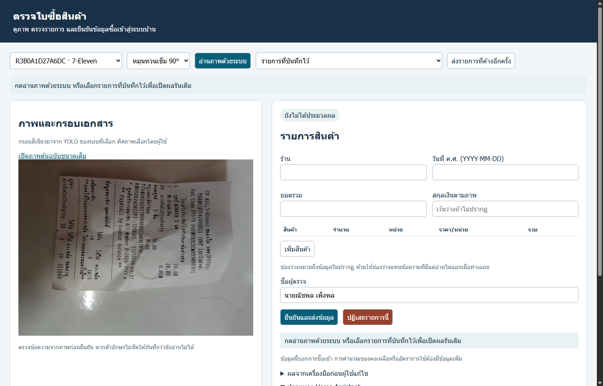
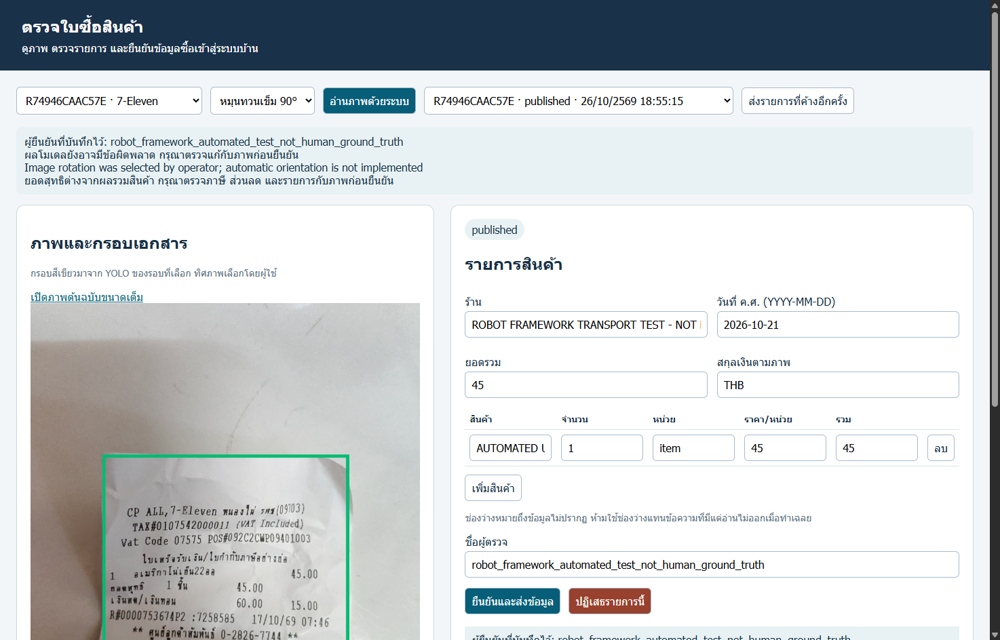
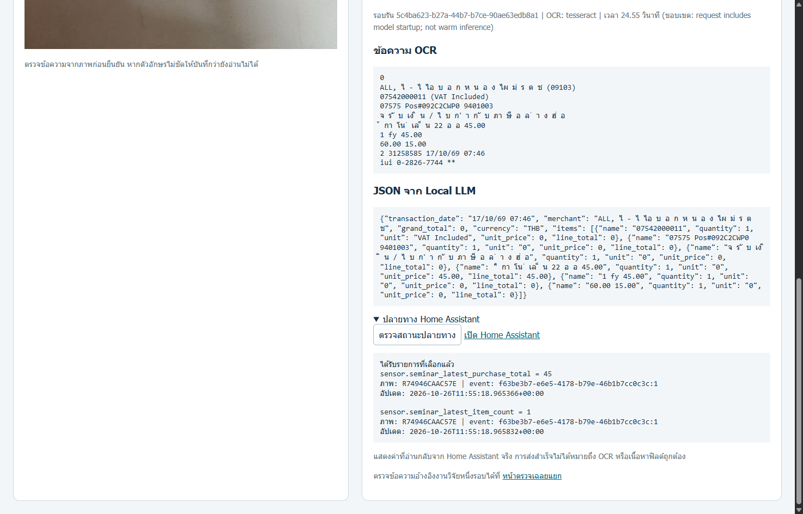
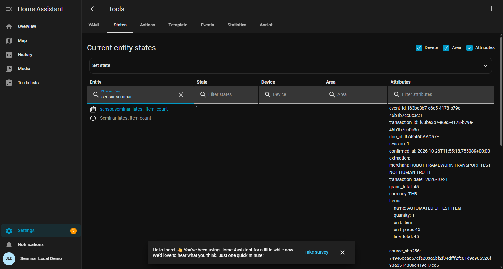

คู่มือกดตามทีละขั้น — เปิดเดโม ซ้อม และพรี 10 นาที
คู่มือสำหรับณัชพลและธนบดี • ตรวจชื่อปุ่มจากระบบรุ่นปัจจุบัน 26 ตุลาคม 2569
เริ่มใช้: เปิด CLICK_BY_CLICK_GUIDE.html ด้วย Chrome หรือ Edge มีสารบัญกดข้ามหัวข้อและภาพประกอบ เปิดอ่านได้แม้ยังไม่เปิดบริการเดโม ส่วนเว็บเดโมต้องใช้เครื่องที่ติดตั้งระบบไว้แล้ว
1. เตรียมไฟล์และเลือกทางที่จะพรี
เปิดโฟลเดอร์ Seminar แล้วเข้า PRESENTATION_READY_2026-10-26 ใช้ไฟล์เหล่านี้:
| ใช้ทำอะไร | ไฟล์ที่เปิด |
|---|---|
| ฉายสไลด์ | Ass5_10MIN_REVIEWED_v2_2026-10-26.pptx |
| สำรองเมื่อ PowerPoint มีปัญหา | PDF ชุดเดียวกัน |
| ซ้อมคำพูด | SCRIPT_10_MIN_REVIEWED_v2.md |
| เตรียมตอบกรรมการ | QA_ALL_21_SLIDES.md |
| เปิดบริการเดโม | Seminar\DEMO_PRESENTATION_2026-10-21\OPEN_DEMO.cmd |
สำหรับการลองครั้งแรก ให้ทำหัวข้อ 2 → 3 → 4 → 5 → 6 ก่อน ยังไม่ต้องจับเวลา 2 นาที เมื่อเข้าใจแล้วจึงเลือกวิธีขึ้นพรีในหัวข้อ 7 และซ้อมตามหัวข้อ 8
- ถ้าจะทำข้อมูลที่คนตรวจจริง: ทำหัวข้อ 4–6 โดยอ่านใบซื้อสินค้าด้วยตนเอง แล้วเก็บ URL ของรายการนั้นไว้
- ถ้าต้องการดูระบบทันทีโดยไม่รอโมเดล: ทำหัวข้อ 3 ใช้ผล Robot ที่บันทึกไว้ และบอกว่าเป็นข้อมูลทดสอบการส่ง
- ถ้าจะใช้คลิป: อัดหลังซ้อมทำจริงสำเร็จ ตามหัวข้อ 9 ปัจจุบันยังไม่มีไฟล์
DEMO_2_MIN.mp4ในชุดนี้
เครื่องเพื่อนที่มีเพียงไฟล์จาก GitHub เปิดสไลด์และคู่มือนี้ได้ แต่ยังเปิดบริการเดโมไม่ได้จนกว่าจะมี Python, โมเดล, WSL และบริการที่ตั้งค่าไว้ 127.0.0.1 หมายถึงเครื่องที่กำลังเปิดเบราว์เซอร์อยู่
2. เปิดระบบตั้งแต่เริ่ม
- เสียบสายชาร์จ ใช้เครื่องที่ติดตั้งเดโมไว้ ปิดหน้าต่างหรือการแจ้งเตือนส่วนตัวที่ไม่ต้องการฉาย
- กด Windows + E เพื่อเปิด File Explorer
- เข้าโฟลเดอร์
Seminar→DEMO_PRESENTATION_2026-10-21 - ดับเบิลคลิก OPEN_DEMO.cmd ไม่ใช่
Start-Demo.ps1หาก Windows ซ่อนนามสกุล ชื่ออาจแสดงเป็นOPEN_DEMO - รอให้สคริปต์ตรวจ runtime และเปิด MQTT / Home Assistant อย่ากดเปิดซ้ำหลายหน้าต่าง
- ถ้าสำเร็จ จะมีข้อความ SERVICES READY: http://127.0.0.1:8090/demo และเปิดเบราว์เซอร์ หน้าต่างคำสั่งอาจปิดเองเมื่อทำงานเสร็จ
- ถ้าเบราว์เซอร์ไม่เปิด ให้เปิด Chrome หรือ Edge กด Ctrl + L พิมพ์
http://127.0.0.1:8090/demoแล้วกด Enter เรียกแท็บนี้ว่า แท็บ A - กด Ctrl + T แล้วเปิด
http://127.0.0.1:8123/config/tools/stateเรียกแท็บนี้ว่า แท็บ B - ถ้าแท็บ B ขอเข้าสู่ระบบ ให้ใช้บัญชี Home Assistant ของเครื่องนี้ หากเข้าอยู่แล้วให้ข้าม ไม่ต้องสร้างบัญชีใหม่ หากจำไม่ได้ ข้อมูลตั้งค่าบัญชีอยู่ในไฟล์ส่วนตัว
C:\Users\NATCHAPOL\SeminarLab\preboard\services\ha_auth.jsonเปิดตรวจเฉพาะก่อนแชร์จอ ปิดไฟล์ก่อนอัดหรือพรี และอย่านำไฟล์นี้ไปส่งให้เพื่อน - กลับแท็บ A ตรวจว่าเห็นหัวข้อ ตรวจใบซื้อสินค้า, ภาพทางซ้าย และฟอร์มทางขวา หากหน้าจอแคบ ฟอร์มจะอยู่ถัดลงมาด้านล่าง ให้เลื่อนลง
สิ่งที่ขั้นนี้ยืนยัน: เปิดบริการและเชื่อมต่อได้ การขึ้น SERVICES READY ยังไม่ยืนยันว่าโมเดลอ่านข้อความใหม่สำเร็จ ต้องทำหัวข้อ 4 เพิ่มก่อนใช้เดโมสด

ภาพหน้าเริ่มต้นที่เปิดตรวจจริง เมนูและช่องกรอกอาจเรียงต่างกันตามความกว้างหน้าต่าง
3. ลองเปิดผลย้อนหลังทันที — ไม่ต้องรอโมเดล
ขั้นนี้เหมาะสำหรับทำความคุ้นเคยกับหน้าจอ และเป็นเส้นทางสำรองในวันพรี
ที่แท็บ A กด Ctrl + L
วาง URL นี้ แล้วกด Enter:
เปิดผลทดสอบ Robot ที่บันทึกไว้
http://127.0.0.1:8090/demo?receipt=f63be3b7-e6e5-4178-b79e-46b1b7cc0c3cรอให้ภาพขึ้นครบ ควรเห็นกรอบสีเขียวและสถานะ
publishedช่องร้านมีข้อความROBOT FRAMEWORK TRANSPORT TEST - NOT HUMAN TRUTHและชื่อผู้ตรวจเป็นrobot_framework_automated_test_not_human_ground_truthเลื่อนลง แล้วคลิกข้อความ ผลจากเครื่องมือก่อนผู้ใช้แก้ไข เพื่อกางส่วนผลดิบ ดู ข้อความ OCR, JSON จาก Local LLM และ รอบรัน
เลื่อนลงถึงหัวข้อ ปลายทาง Home Assistant กด ตรวจสถานะปลายทาง
ถ้าขึ้น ได้รับรายการที่เลือกแล้ว ให้ดูว่ามี sensor สองตัวและ event เดียวกัน หากขึ้น ค่าล่าสุดยังไม่ตรงรายการที่เลือก หมายถึง HA แสดงรายการอื่นที่ส่งภายหลัง ให้เปิดเผยตามนั้น ไม่กดยืนยันใหม่เพื่อทำให้ภาพดูตรง
คำพูดสำหรับรายการนี้: “นี่เป็นผลย้อนหลังจากการทดสอบ Robot ครับ ภาพและผลโมเดลมาจากระบบ ส่วนชื่อสินค้าและข้อมูลที่ส่งเป็นค่าทดสอบการเชื่อมต่อ ยังไม่ใช่รายการที่เจ้าของงานตรวจความถูกต้องแล้วครับ”
ยอด 45, จำนวนแถวสินค้า 1 และวันที่ 2026-10-21 ในฟอร์มนี้เป็นค่าที่ Robot ป้อนทดสอบ อย่าคัดลอกมาเป็นคำตอบของใบซื้อสินค้าโดยไม่อ่านภาพ ขั้นนี้ไม่ต้องกดอ่านภาพ ยืนยัน ปฏิเสธ หรือส่งซ้ำ

ภาพนี้เป็นผลทดสอบสังเคราะห์สำหรับตรวจการส่ง ไม่ใช่ตัวอย่างที่คนตรวจยืนยันความถูกต้องแล้ว
4. ซ้อมอ่านภาพใหม่ทีละคลิก
ทำก่อนวันพรีหรือก่อนอัดคลิป เผื่อเวลารอหลายนาทีบน CPU ไม่ใช้เวลานี้เป็นส่วนบังคับของเดโม 2 นาที
- เปิดแท็บ A กด Ctrl + L เข้า
http://127.0.0.1:8090/demoใหม่ เพื่อเริ่มจากหน้าที่ไม่ได้เลือกรายการย้อนหลัง - คลิกเมนูซ้ายสุดบนหน้าเว็บ ซึ่งแสดงรหัสภาพและชื่อร้าน เลือก R74946CAAC57E รายการอาจมีชื่อร้านต่อท้าย
- ดูภาพด้านซ้าย แล้วตรวจเมนูทิศภาพที่อยู่ถัดมา สำหรับภาพนี้เลือก หมุนทวนเข็ม 90° เมนูอาจเลือกให้อยู่แล้ว ค่านี้ใช้ตอนประมวลผล ไม่ได้หมายความว่าภาพต้นฉบับที่เห็นจะหมุนทันที
- คลิก อ่านภาพด้วยระบบ หนึ่งครั้ง ปุ่มจะจางลง และมีข้อความ กำลังตรวจภาพและอ่านรายการ อาจใช้เวลาหลายนาทีบน CPU… ระหว่างรออย่ารีเฟรชหรือเปลี่ยนรายการ
- เมื่อเสร็จ ปุ่มจะกลับมากดได้ ภาพควรโหลดครบและมีกรอบสีเขียว ฟอร์มมีผลที่ระบบอ่าน และสถานะมักเป็น
pending_reviewซึ่งหมายถึงรอคนตรวจ - อ่านข้อความแจ้งเตือนด้านบน ถ้ามี error หรือบอกว่าโมเดลล้มเหลว อย่าใช้สถานะ pending_review เป็นหลักฐานว่า LLM สำเร็จ
- เลื่อนลงแล้วคลิก ผลจากเครื่องมือก่อนผู้ใช้แก้ไข ตรวจว่า OCR มีข้อความ และส่วน JSON มีโครงสร้างข้อมูล เช่น
itemsพร้อมรหัสรอบรัน หากผลว่างหรือมี error ให้ดูหัวข้อ 10 - เก็บ URL ของรอบนี้: กลับด้านบน คลิกเมนู รายการที่บันทึกไว้ รายการที่ถูกเลือกคือรอบที่เพิ่งอ่าน ถ้าต้องการคัดลอก receipt ID จากหน้าจอ ให้ทำหลังยืนยันในหัวข้อ 5 ซึ่งข้อความจะแสดง event ID ชัดเจน URL หน้าเว็บไม่ได้เปลี่ยนเป็นลิงก์รอบใหม่ให้อัตโนมัติ
คำพูดประกอบ: “ผมเลือกทิศของภาพเอง จากนั้น YOLO หาตำแหน่งเอกสาร OCR อ่านข้อความ แล้ว Local LLM จัดเป็น JSON ครับ ผลนี้ยังต้องตรวจแก้ก่อนนำไปใช้”
หน้าเดโมปัจจุบันใช้ภาพจากชุดที่เตรียมไว้ ไม่มีปุ่ม Upload หรือ Browse สำหรับเพิ่มภาพใหม่จากเครื่อง
5. ตรวจแก้ฟอร์ม และยืนยันด้วยชื่อของผู้ตรวจจริง
- คลิก เปิดภาพต้นฉบับขนาดเต็ม ทางซ้าย ระบบเปิดภาพในแท็บใหม่ ใช้ดูข้อความที่เล็กแล้วกลับแท็บ A อย่าเดาคำที่มองไม่ออก
- ช่อง ร้าน: คลิกในช่อง กด Ctrl + A แล้วพิมพ์ชื่อที่อ่านได้จากภาพ
- ช่อง วันที่ ค.ศ. (YYYY-MM-DD): อ่านวันที่บนใบซื้อสินค้าแล้วกรอกเป็นปี-เดือน-วัน เช่น
2026-10-17เป็นเพียงตัวอย่างรูปแบบ ถ้าเป็น พ.ศ. ให้ลบ 543 หลังตรวจว่าปีถูกต้อง ไม่ใช้วันปัจจุบันหรือวันทดสอบแทนวันที่ซื้อ - ช่อง ยอดรวม: กรอกยอดซื้อสุทธิจากภาพ แยกจากเงินรับและเงินทอน ไม่พิมพ์เครื่องหมายสกุลเงินในช่องตัวเลข
- ช่อง สกุลเงินตามภาพ: กรอกเมื่อมีหลักฐานจากภาพ หากไม่ปรากฏให้เว้นว่าง
- ตรวจตารางทีละแถว คอลัมน์เรียงเป็น สินค้า → จำนวน → หน่วย → ราคา/หน่วย → รวม ตัวเลขต้องตรงกับภาพ ไม่ได้คำนวณหรือแก้ความผิดพลาดให้โดยอัตโนมัติทุกช่อง
- ถ้าแถวเป็นหัวใบเสร็จ ภาษี เลขเครื่อง หรือข้อความท้ายใบที่ไม่ใช่สินค้า ให้กด ลบ ที่ท้ายแถวนั้น ถ้าขาดสินค้าที่เห็นชัด ให้กด เพิ่มสินค้า แล้วกรอกแถวใหม่
- ช่องว่างใช้เมื่อข้อมูลไม่ปรากฏในภาพ ไม่ใช้แทนข้อความที่มีแต่อ่านไม่ออก หากข้อมูลสำคัญยังอ่านไม่ได้ ให้หยุดการยืนยันและบอกข้อจำกัด หรือเลือกรูปที่ตรวจได้ชัดก่อนทำคลิป
- ที่ ชื่อผู้ตรวจ กด Ctrl + A แล้วใส่ชื่อของคนที่ตรวจจริง ตรวจทุกช่องก่อนใส่ชื่อ แม้ระบบจะเติมชื่อไว้ก่อนแล้ว
- กด ยืนยันและส่งข้อมูล หนึ่งครั้ง การกดนี้บันทึกข้อมูลที่แก้และส่งผ่าน MQTT ไป HA จริง จึงควรทำหลังตรวจเสร็จ
- มองหาข้อความ บันทึกการยืนยันแล้ว · … ตามด้วย event ID และข้อความ ส่งถึง MQTT broker แล้ว ตรวจสถานะปลายทางได้ใน Home Assistant
- คัดลอก event ID เก็บใน Notepad เช่นรูปแบบ
xxxxxxxx-xxxx-xxxx-xxxx-xxxxxxxxxxxx:1ส่วนก่อนเครื่องหมาย:คือ receipt ID ส่วนหลังคือ revision สร้างลิงก์ด้วยhttp://127.0.0.1:8090/demo?receipt=ตามด้วย receipt ID เท่านั้น ไม่ใส่:1ท้าย URL - เปิดลิงก์ที่สร้างในแท็บใหม่ ตรวจว่าร้าน ผู้ตรวจ และรายการตรงกับรอบของตน แล้วกด Ctrl + D บันทึกบุ๊กมาร์กชื่อ “เดโมที่ตรวจแล้ว” เก็บ event ID เต็มไว้สำหรับเทียบปลายทาง
สิ่งที่อย่าเผลอกด: ปุ่ม ปฏิเสธรายการนี้ ใช้ปฏิเสธรอบที่เลือก ไม่ใช่ปุ่มล้างฟอร์ม ส่วน ส่งรายการที่ค้างอีกครั้ง ใช้เมื่อมีงานส่งค้าง ไม่ใช่ปุ่มประมวลผลภาพใหม่
การแก้ช่องกรอกอย่างเดียวยังไม่ใช่การบันทึกยืนยัน หากเปลี่ยนรายการก่อนกดยืนยัน ค่าที่แก้อาจหาย ผล OCR/JSON ดิบเก็บแยกจากข้อมูลที่ตรวจแก้
6. ตรวจให้เห็นว่าข้อมูลไปถึง Home Assistant จริง
6.1 ตรวจจากหน้าเดโมก่อน
- ที่แท็บ A เลื่อนลงถึง ปลายทาง Home Assistant
- กด ตรวจสถานะปลายทาง ถ้าเพิ่งส่งและค่ายังไม่มา รอสักครู่แล้วกดตรวจอีกครั้ง
- ต้องเห็น ได้รับรายการที่เลือกแล้ว พร้อม sensor สองตัว:
| Sensor | สิ่งที่ต้องเทียบ |
|---|---|
sensor.seminar_latest_purchase_total |
ยอดรวมตรงกับช่องยอดรวมที่ยืนยัน |
sensor.seminar_latest_item_count |
จำนวนแถวสินค้าในรายการที่ยืนยัน ไม่ใช่ผลรวมจำนวนชิ้นทุกแถว |
- ตรวจ
event:ของทั้งสองตัวให้ตรงกับ event ID ที่จดไว้ พร้อมตรวจรหัสภาพ การเห็นยอดตรงอย่างเดียวไม่พอ เพราะอาจเป็นยอดเดิม

ภาพผลย้อนหลังจาก Robot ใช้อ้างอิงตำแหน่งข้อความและปุ่ม ค่าจริงของรอบที่คนตรวจอาจต่างจากภาพ
6.2 เปิดดูใน Home Assistant
- คลิกแท็บ B ที่เปิด
http://127.0.0.1:8123/config/tools/stateไว้ หากหลงหน้า ให้ Ctrl + L แล้ววาง URL นี้ใหม่ - เลือกแท็บ States หากยังไม่ได้เลือก หน้าอังกฤษมีหัวข้อ Current entity states
- มองตารางที่มีคอลัมน์ Entity / State / Device / Area / Attributes ใต้หัว Entity มีช่องค้นหา Filter entities คลิกช่องนี้ ไม่ใช่ Filter states
- พิมพ์ sensor.seminar_ ควรเหลือสอง sensor ของเดโม
- ถ้าไม่เห็นข้อมูลประกอบทางขวา ให้ติ๊ก Attributes ด้านบนของตาราง
- ดูคอลัมน์ State ของ total และ item_count ให้ตรงกับหน้าเดโม จากนั้นดู event_id ใน Attributes ให้ตรงกันทั้งสองตัวและตรงกับรอบที่ยืนยัน อาจต้องเลื่อนลงเพื่อดูแถวที่สอง
- ไม่ต้องเปิดหรือกด Set state เพราะช่องนั้นใช้เขียนค่าเอง การสาธิตนี้ต้องอ่านค่าที่ระบบส่งเข้ามาจริง

ภาพ HA จากการทดสอบ Robot รอบ 18:54 วันที่ 26 ต.ค. ใช้ชี้ตำแหน่ง Entity, State และ Attributes ไม่ใช่ภาพข้อมูลตรวจจริงของเจ้าของงาน
คำพูดประกอบ: “ยอดรวม จำนวนแถวสินค้า และ event ID ตรงกับรอบที่ยืนยัน แสดงว่าข้อมูลถึง Home Assistant แล้วครับ ส่วนความถูกต้องของเนื้อหาเป็นอีกเรื่องที่ต้องตรวจและประเมินแยก”
7. ลำดับกดบนเวที — เดโมไม่เกิน 2 นาที
สำหรับตอนนี้ใช้ผลย้อนหลังที่เตรียมเปิดไว้ หากอัดคลิปสำเร็จแล้วค่อยเลือกเล่นคลิปแทน อย่ารออ่านภาพใหม่บน CPU กลางการพรี
ก่อนขึ้นเวที เปิดบุ๊กมาร์กของรอบที่เลือกในแท็บ A และหน้า States ที่กรอง sensor แล้วในแท็บ B ลองตรวจ event ก่อนเริ่ม จากนั้นกลับ PowerPoint
| เวลาเดโม | ต้องกด/ชี้อะไร | พูดว่าอะไร |
|---|---|---|
| 0:00–0:15 | จากสไลด์ 18 กด Alt + Tab เลือก Chrome/Edge ที่เปิดแท็บ A | “ขอแสดงผลย้อนหลังที่บันทึกไว้ เพื่อให้เห็นขั้นตอนภายในเวลาครับ” ถ้าใช้ Robot เพิ่มว่า “ฟอร์มที่ส่งเป็นค่าทดสอบการเชื่อมต่อครับ” |
| 0:15–0:35 | ชี้ภาพและกรอบสีเขียว | “ผู้ใช้เลือกทิศภาพ แล้ว YOLO หาตำแหน่งเอกสารครับ” |
| 0:35–0:55 | เลื่อนลง คลิกผลจากเครื่องมือก่อนผู้ใช้แก้ไข | “OCR และ JSON นี้เป็นผลดิบของรอบที่เลือก เก็บไว้ตรวจย้อนหลังครับ” |
| 0:55–1:15 | ชี้ช่องร้าน วันที่ ยอด และตาราง ไม่แก้หรือยืนยันซ้ำในทางย้อนหลัง | “ขั้นตอนใช้งานจริงให้ผู้ใช้ตรวจแก้และลงชื่อก่อนส่งครับ” |
| 1:15–1:35 | เลื่อนลง กดตรวจสถานะปลายทาง | “ตรวจค่าที่อ่านกลับและ event ID ของรายการนี้ครับ” ถ้าไม่ตรงให้บอกว่าปลายทางเป็นรายการล่าสุดอื่น |
| 1:35–1:50 | คลิกแท็บ B ชี้ State และ event_id ที่กรองไว้ | “สอง sensor แสดงยอดรวมและจำนวนแถวสินค้าครับ” อ้างว่าส่งรอบนี้ถึงแล้วเฉพาะเมื่อ event ตรง |
| 1:50–2:00 | Alt + Tab กลับหน้าต่าง PowerPoint Slide Show แล้วกดลูกศรขวาไปหน้า 19 | “นี่คือหลักฐานการเชื่อมระบบ ส่วนความถูกต้องของโมเดลต้องประเมินแยกครับ” |
ระหว่างเดโม ถ้าหน้าเว็บไม่ตอบสนองเกิน 10 วินาที ให้พูด “ขอใช้ผลที่บันทึกในสไลด์ประกอบครับ” แล้วกลับสไลด์ ไม่เปิด CMD หรือแก้ runtime ต่อบนเวที
8. เปิดสไลด์และซ้อมรวม 10 นาที
- ดับเบิลคลิกไฟล์ Ass5_10MIN_REVIEWED_v2_2026-10-26.pptx ตรวจว่าเป็น v2 จำนวน 21 หน้า
- ก่อนเริ่ม ให้เปิดแท็บ A และ B เตรียมไว้ตามหัวข้อ 7 แล้วกลับ PowerPoint
- กด F5 เพื่อเริ่มฉายจากหน้าแรก ถ้าแป้นพิมพ์ใช้ปุ่ม F เป็นปุ่มเสียง/แสง อาจต้อง Fn + F5 หรือใช้เมนู Slide Show → From Beginning
- เลื่อนไปหน้าถัดไปด้วยลูกศรขวาหรือ Space ย้อนด้วยลูกศรซ้าย
- ธนบดีพูดหน้า 1–13 ส่งต่อณัชพลเมื่อจบหน้า 13 ณัชพลพูดหน้า 14–21
- ถึงหน้า 18 เปิดเรื่องประมาณ 15 วินาที แล้วสลับไปเดโมหรือคลิปไม่เกิน 2 นาที จบแล้วกลับ Slide Show ก่อนกดไปหน้า 19
- ถ้า Alt + Tab กลับมาหน้าแก้ไขสไลด์ ให้เลือกหน้าปัจจุบันแล้วกด Shift + F5 หรือเมนู Slide Show → From Current Slide เพื่อฉายต่อ อย่ากด F5 จนเริ่มใหม่โดยไม่ตั้งใจ
- จบหน้า 21 ให้รอคำถาม กด Esc เมื่อต้องออกจากโหมดฉาย
- ถ้าใช้จอโปรเจกเตอร์สองจอ ลองต่อจอและเลือกจอฉายในเมนู Slide Show ล่วงหน้า ให้เพื่อนดูจากจอผู้ชมว่ามองเห็นสไลด์และเบราว์เซอร์ถูกจอ ไม่ใช่หน้า notes การสลับหน้าต่างบนจอจริงยังต้องซ้อมด้วยตนเอง
| จุดเช็ก | เวลาสะสมเป้าหมาย |
|---|---|
| จบหน้า 8 | 2:10 |
| จบหน้า 13 / เปลี่ยนคน | 3:50 |
| จบหน้า 17 | 5:20 |
| จบหน้า 18 รวมเดโม | 7:35 |
| จบหน้า 19 | 8:15 |
| จบหน้า 21 | 9:00 |
ให้เพื่อนใช้โทรศัพท์จับเวลา เริ่มเมื่อพูดคำแรก นับเวลาสลับหน้าต่างด้วย ซ้อมอย่างน้อยสองรอบ เป้ารวมไม่เกิน 9:30 นาที เพื่อเหลือช่องเผื่อในกรอบ 10 นาที ตัวเลขในตารางเป็นแผน ยังไม่ใช่ผลจับเวลาการพูดจริง
9. ถ้าจะอัดคลิปไว้ใช้แทนผลย้อนหลัง
- ใช้เครื่องมือบันทึกหน้าจอที่คุณเปิดใช้งานได้อยู่แล้ว เลือกบันทึกหน้าต่างเบราว์เซอร์หรือพื้นที่ที่รวมแท็บ A และ B ทดสอบไฟล์สั้นก่อนอัดจริง
- ล็อกอิน HA ให้เสร็จก่อนเริ่มอัด ปิดไฟล์บัญชีส่วนตัว และตรวจว่าไม่มีข้อมูลส่วนตัวในแท็บอื่น
- อัดขั้นเลือกภาพ → อ่านภาพ → เปิดผลดิบ → ตรวจแก้จริง → ใส่ชื่อ → ยืนยัน → ตรวจ event → เปิด HA ตามหัวข้อ 4–6
- ตรวจข้อมูลทุกช่องจริงแม้ต้องใช้เวลานาน ถ้าตัดช่วงรอให้ใส่ข้อความ ตัดช่วงรอประมวลผล ถ้าย่อการตรวจให้ใส่ ย่อช่วงตรวจแก้โดยผู้ใช้ ไม่ทำให้คลิป 2 นาทีดูเป็นค่าเวลาประมวลผลจริง
- ตัดต่อให้ไม่เกิน 2 นาทีตาม DEMO_2_MIN_RUNBOOK.md แล้วบันทึกชื่อ DEMO_2_MIN.mp4 ในโฟลเดอร์เดียวกับคู่มือนี้
- ดับเบิลคลิกไฟล์และดูให้จบหนึ่งรอบ ตรวจตัวหนังสือ เสียง และเวลา ทดลองเปิดโดยไม่ใช้อินเทอร์เน็ต คลิปไม่จำเป็นต้องฝังในสไลด์ถ้าซ้อมสลับหน้าต่างแล้ว
- ก่อนพรีเปิดคลิปค้างที่จุดเริ่ม เมื่อถึงสไลด์ 18 ใช้ Alt + Tab ไปเครื่องเล่น กดเล่นให้จบ แล้ว Alt + Tab กลับ Slide Show กดไปหน้า 19 ปุ่มลัดเครื่องเล่นขึ้นกับโปรแกรม ให้ลองของจริงก่อน
10. เจอปัญหานี้ต้องทำอะไร
| อาการ | กด/ตรวจอย่างไร |
|---|---|
'powershell.exe' is not recognized |
ปิดหน้าต่างเก่า เปิด OPEN_DEMO.cmd ตัวล่าสุดในเครื่องอีกครั้ง ตัวแก้เรียก PowerShell ด้วยตำแหน่งเต็มแล้ว หากใช้สำเนาเก่าจากที่อื่น ให้ใช้ไฟล์ในโฟลเดอร์หลักนี้ |
| ขึ้น Press any key to continue | อ่านข้อความเหนือบรรทัดนี้ก่อน เป็นการหยุดให้เห็น error ไม่ใช่ข้อความว่าพร้อม จด error แล้วกดปุ่มใดก็ได้เพื่อปิด |
| ขึ้น Missing demo Python | เครื่องนี้ไม่มีสภาพแวดล้อมที่ตัวเปิดคาดไว้ ใช้เครื่องที่ติดตั้งเดโมแล้ว หรือใช้คลิป/สไลด์บนเครื่องเพื่อน |
| แจ้งไม่พบ llama-server.exe | หยุดการอ่านภาพใหม่ ตรวจข้อความ runtime อย่าปิด antivirus เป็นขั้นปกติของคู่มือ หากใช้ผลเก่า ให้เปิดโหมด SavedResultsOnly ตามคำสั่งด้านล่าง |
| เปิดเว็บไม่ได้ / connection refused | เปิด OPEN_DEMO.cmd ก่อน ตรวจ error ในหน้าต่างนั้น แล้วตรวจ URL ว่าใช้พอร์ต 8090 สำหรับเดโม และ 8123 สำหรับ HA |
| อ่านภาพนาน | ตอนซ้อมรอ CPU ทำงานได้ อย่ากดซ้ำ หากมี error ให้บันทึกข้อความ ตอนพรีใช้ผลย้อนหลังหรือคลิปตามที่เตรียมไว้ |
| ภาพว่าง/ไม่ครบ | รอโหลด หากยังไม่ครบและไม่ได้กำลังประมวลผลหรือมีฟอร์มแก้ค้าง ให้ Ctrl + R แล้วเปิดรายการเดิมใหม่ ถ้ามีงานแก้ค้างให้จดไว้ก่อนรีเฟรช |
| Reviewer name is required | กรอกชื่อผู้ตรวจจริงหลังตรวจฟอร์มครบ แล้วกดยืนยันอีกครั้ง |
| ขึ้นยังส่งไม่สำเร็จ | ตรวจว่าบริการพร้อมก่อน แล้วกดส่งรายการที่ค้างอีกครั้ง รอและกดตรวจสถานะปลายทาง การส่งซ้ำปุ่มนี้จัดการรายการค้าง ไม่ใช่การอ่านโมเดลใหม่ |
| ค่าล่าสุดยังไม่ตรงรายการที่เลือก | ตรวจว่าเลือกรอบที่ต้องการจริง HA อาจมีรอบใหม่กว่า เทียบ event_id ไม่สรุปว่ารอบเก่าถึงปลายทางจากยอดเพียงอย่างเดียว |
| HA ไม่พบ sensor | ตรวจว่าอยู่หน้า States และพิมพ์ sensor.seminar_ ใน Filter entities ถ้ายังไม่มี ให้กลับหน้าเดโมดูสถานะปลายทางและตรวจว่าตัวเปิดบริการทำงานครบ |
| เห็นร้าน ROBOT FRAMEWORK… | กำลังดูรายการทดสอบสังเคราะห์ ใช้สาธิตการส่งพร้อมเปิดเผยได้ หรือสร้างรอบใหม่และตรวจเองตามหัวข้อ 4–6 อย่าเปลี่ยนเฉพาะชื่อผู้ตรวจแล้วอ้างว่าคนตรวจแล้ว |
| ลิงก์ย้อนหลังเปิดแต่ไม่เลือกรายการ | ตรวจ receipt ID และตรวจว่าใช้เครื่อง/ฐานข้อมูลเดิม เลือกจากเมนูรายการที่บันทึกไว้ หรือใช้หลักฐานในสไลด์ |
เปิดเฉพาะผลย้อนหลังเมื่อ runtime อ่านภาพยังไม่พร้อม
- เปิด File Explorer ไปที่
Seminar\DEMO_PRESENTATION_2026-10-21 - คลิกแถบที่อยู่ด้านบน พิมพ์
cmdแล้วกด Enter หน้าต่างคำสั่งจะเปิดที่โฟลเดอร์นั้น - พิมพ์คำสั่งนี้ แล้วกด Enter:
OPEN_DEMO.cmd -SavedResultsOnly
- ถ้าสำเร็จ จะขึ้น READY FOR SAVED RESULTS ONLY จากนั้นทำหัวข้อ 3 โหมดนี้ข้ามการตรวจ runtime อ่านภาพ แต่ยังต้องมีฐานข้อมูลและบริการเดโม ไม่ใช่การแก้โมเดล และไม่ควรกดอ่านภาพใหม่
11. เช็กลิสต์ก่อนออกไปพรี
- ใช้ PPTX v2 และมี PDF สำรอง
- เปิดคู่มือนี้ได้ และรู้ว่าตนเองพูดหน้าไหน
- เลือกแน่นอนแล้วว่าจะใช้คลิป หรือผลย้อนหลังของรอบใด
- ถ้าใช้ผล Robot เตรียมคำพูดเปิดเผยว่าเป็นข้อมูลทดสอบการส่ง
- ถ้าใช้ผลที่คนตรวจ เก็บ URL และ event ID ของรอบนั้นไว้
- เปิดเดโมและ HA ล็อกอิน/กรอง sensor เรียบร้อยก่อนเริ่ม
- ลอง Alt + Tab ไปและกลับจาก Slide Show บนจอที่จะใช้จริง
- ถ้าใช้คลิป เล่นจบหนึ่งรอบจากไฟล์ในเครื่องแล้ว
- ซ้อมทั้งสองคนรวมเปลี่ยนหน้าต่างไม่เกิน 9:30 นาที
- จำทางสำรอง: ถ้าติดเกิน 10 วินาที กลับสไลด์อธิบายหลักฐานเดิม
คู่มือนี้ตรวจชื่อปุ่มจากหน้าเว็บและโค้ดรุ่นปัจจุบัน ภาพประกอบหน้าเดโมถ่ายจากการเปิดดูแบบไม่เปลี่ยนข้อมูล ส่วนภาพ HA มาจาก Robot รอบที่ผ่านครบ 7/7 ไม่ได้สร้างข้อมูลตรวจจริงหรืออัดคลิปแทนเจ้าของงาน